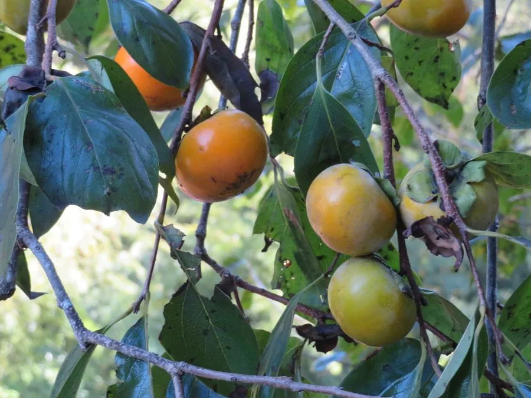

乔木 · 植物界
柿子 Diospyros kaki

中国原产的落叶乔木，秋季果实橙红挂满枝头，果肉柔软多汁，可鲜食、制柿饼，栽培历史逾两千年。
- 分类
- 门被子植物门纲木兰纲目杜鹃花目科柿科属柿属
- 栖息环境
- 海拔 1500 米以下的向阳山坡、沟谷与村旁，喜光耐旱
- 地理分布
- 原产中国长江与黄河流域；山东、河北、河南、陕西、广西等地栽培最多
- 保护级别
- 暂无评估；中国未列入国家重点保护野生植物名录
物种志
柿子为柿科柿属落叶乔木，高 10–15 米，树皮灰褐色、呈方块状开裂，小枝被褐色柔毛。叶片互生，宽椭圆形至卵形，表面深绿有光泽，入秋转为橙红。花黄白色，钟形，雌雄同株或异株，多生于当年生枝条的叶腋；浆果扁球形或卵圆形，成熟时橙红至朱红，果肉柔软多汁，未熟时富含可溶性单宁而涩口，内含 4–8 粒扁平的褐色种子。
柿子原产中国长江流域及黄河流域，栽培历史逾两千年，山东、河北、河南、陕西、广西是主产区，日本、韩国亦有长期栽培，19 世纪传入欧美。它喜温暖、阳光充足，耐寒、耐旱，对土壤适应性强，常用君迁子作砧木嫁接繁殖。果实经脱涩后可鲜食，也可制成柿饼，表面白霜是析出的糖分；柿蒂、柿霜入药，木材可制器具。中国北方许多村庄至今保留着秋日晒柿饼的习俗。
形态与习性
- 株高10–15 m，树皮方块状开裂
- 花期5–6 月，花黄白色、钟形
- 果期9–11 月，果皮橙红至朱红
- 光照喜光，向阳处结果多、着色好
- 水分耐旱，忌积水
- 土壤适应性强，以深厚壤土为佳
- 主要用途鲜食、制柿饼，柿蒂入药，木材制器具
趣味知识
- 未熟的柿子富含可溶性单宁，与唾液蛋白结合便产生强烈的涩味。
- 柿饼表面的白霜是果肉中析出的葡萄糖与果糖结晶，并非霉变。
- 柿树常用君迁子作砧木嫁接，可提高抗寒性与适应性。
- 中国栽培柿子已有两千多年，北方许多村落仍保留秋季晒柿饼的习俗。